Cóm fer flan de caqui saludable
Tornar a la página principal
INDEX DE CONTINGUTS
Ingredients
Pas a pas
Resultat Final
Ingredients
- 4 caqui mitjans
- 2 iogurts naturals
- 1 o 1/2 cullarada cacau en pols sense sucre
- 1 cucharadita gingebre
- 1 cucharadita canyella
- Una mica xocolata per a ratllar i decorar
Pas a pas
- Primer pas: Preparem els ingredients.
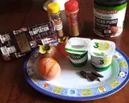
- Segon pas: Pelem els caqui i passem a batre bé.
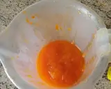
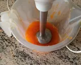
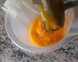
- Tercer pas: En un bol prepararem els iogurts.
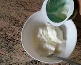
- Quart pas: Li posarem les espècies i cacau.
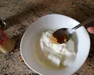
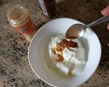
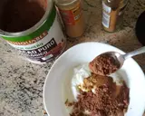
- Cinqué pas: Batem bé i preparem el muntatge
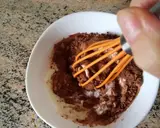
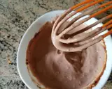
- Sisè pas: Agafem uns gots i repartirem el batut de caqui. A continuació repartim els iogurts.
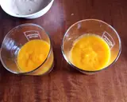
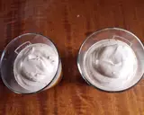
- Setè pas: Ratllem xocolata per damunt quantitat al gust.
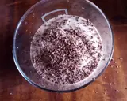
Resultat Final
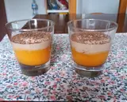
Tornar a encapçalament principal